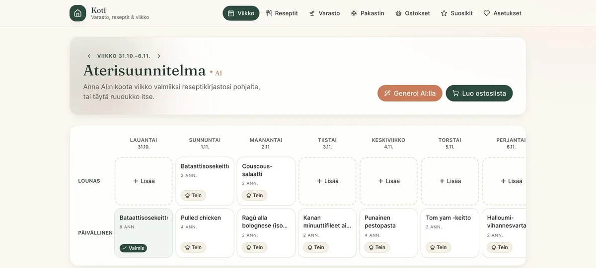

Viikko
Viikko suunnittelee itsensä.
Tekoäly ehdottaa viikon ruoat. Se huomioi pakastimen sisällön ja edellisten päivien tähteet, eikä sama ruoka toistu kahta viikkoa peräkkäin. Iso kattila keittoa riittää kolmeen päivälliseen.
Tekoäly, valinnainen